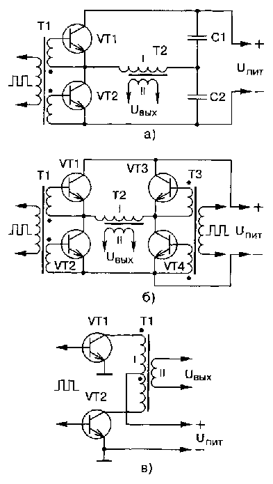
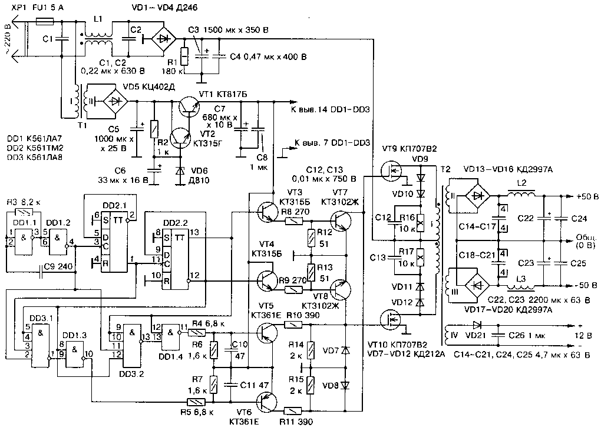
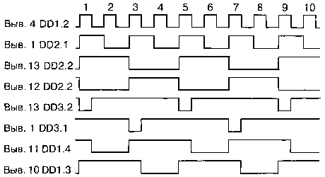
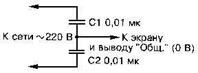

Импульсный блок питания мощного УМЗЧ
Импульсные источники питания широко используются в современной радиоэлектронной аппаратуре. Чаще стали применять их и радиолюбители, о чем свидетельствует возросшее число публикаций в радиотехнической литературе, в частности в журнале "Радио". Однако в большинстве случаев описываются относительно маломощные конструкции. Автор публикуемой статьи предлагает вниманию читателей импульсный блок питания мощностью 800 Вт. От описанных ранее он отличается применением в преобразователе полевых транзисторов и трансформатора с первичной обмоткой со средним выводом. Первое обеспечивает более высокий КПД и пониженный уровень высокочастотных помех, а второе - вдвое меньший ток через ключевые транзисторы и исключает необходимость в развязывающем трансформаторе в цепях их затворов.
Недостаток такого схемного решения — высокое напряжение на половинах первичной обмотки, что требует применения транзисторов с соответствующим допустимым напряжением. Правда, в отличие от мостового преобразователя, в данном случае достаточно двух транзисторов вместо четырех, что упрощает конструкцию и повышает КПД устройства.
В импульсных блоках питания (ИБП) используют одно- и двухтактные высокочастотные преобразователи. КПД первых ниже, чем вторых, поэтому однотактные ИБП мощностью более 40...60 Вт конструировать нецелесообразно. Двухтактные преобразователи позволяют получать значительно большую выходную мощность при высоком КПД. Они делятся на несколько групп, характеризующихся способом возбуждения выходных ключевых транзисторов и схемой включения их в цепь первичной обмотки трансформатора преобразователя. Если говорить о способе возбуждения, то можно выделить две группы: с самовозбуждением и внешним возбуждением. Первые пользуются меньшей популярностью из-за трудностей в налаживании. При конструировании мощных (более 200 Вт) ИБП сложность их изготовления неоправданно возрастает, поэтому для таких источников питания они малопригодны. Преобразователи с внешним возбуждением хорошо подходят для создания ИБП повышенной мощности и порой почти не требуют налаживания.
Что касается подключения ключевых транзисторов к трансформатору, то здесь различают три схемы: так называемую полумостовую (рис. 1, а), мостовую (рис. 1, б) и с первичной обмоткой, имеющей отвод от середины (рис. 1, в).

Рис. 1 - Схемы подключения ключевых транзисторов к трансформатору
На сегодняшний день наибольшее распространение получил полумостовой преобразователь. Для него необходимы два транзистора с относительно невысоким значением напряжения Uкэmax. Как видно из рис. 1, а, конденсаторы С1 и С2 образуют делитель напряжения, к которому подключена первичная (I) обмотка трансформатора Т2. При открывании ключевого транзистора амплитуда импульса напряжения на обмотке достигает значения Uпит/2 - Uкэ нac.
Мостовой преобразователь аналогичен полумостовому, но в нем конденсаторы заменены транзисторами VT3 и VT4 (рис. 1, б), которые открываются парами по диагонали. Этот преобразователь имеет несколько более высокий КПД за счет увеличения напряжения, подаваемого на первичную обмотку трансформатора, а следовательно, уменьшения тока, протекающего через транзисторы VT1—VT4. Амплитуда напряжения на первичной обмотке трансформатора в этом случае достигает значения Uпит- 2Uкэ нac.
Особняком стоит преобразователь по схеме на рис. 1, в, отличающийся наибольшим КПД. Достигается это за счет уменьшения тока первичной обмотки и, как следствие, уменьшения рассеиваемой мощности в ключевых транзисторах, что чрезвычайно важно для мощных ИБП. Амплитуда напряжения импульсов в половине первичной обмотки возрастает до значения Uпит- Uкэ нac . Следует также отметить, что в отличие от остальных преобразователей для него не нужен входной развязывающий трансформатор.
В устройстве по схеме на рис. 1, в необходимо использовать транзисторы с высоким значением Uкэmах. Поскольку конец верхней (по схеме) половины первичной обмотки соединен с началом нижней, при протекании тока в первой из них (открыт VT1) во второй создается напряжение, равное (по модулю) амплитуде напряжения на первой, но противоположное по знаку относительно Uпит. Иными словами, напряжение на коллекторе закрытого транзистора VT2 достигает 2Uпит. поэтому его Uкэ mах должно быть больше 2Uпит.
В предлагаемом ИБП применен двухтактный преобразователь с трансформатором, первичная обмотка которого имеет средний вывод. Он имеет высокий КПД, низкий уровень пульсации и слабо излучает помехи в окружающее пространство. Автор использует его для питания двухканального умощненного варианта УМЗЧ, описанного в [3]. Входное напряжение ИБП - 180...240 В, номинальное выходное напряжение (при входном 220 В) - 2х50 В, максимальная мощность нагрузки - 800 Вт, рабочая частота преобразователя - 90 кГц.
Принципиальная схема ИБП изображена на рис. 2. Как видно, это преобразователь с внешним возбуждением без стабилизации выходного напряжения. На входе устройства включен высокочастотный фильтр C1L1C2, предотвращающий попадание помех в сеть. Пройдя его, сетевое напряжение выпрямляется диодным мостом VD1—VD4, пульсации сглаживаются конденсатором С3. Выпрямленное постоянное напряжение (около 310 В) используется для питания высокочастотного преобразователя.

Рис. 2 - Схема импульсного блока питания
Устройство управления преобразователем выполнено на микросхемах DD1—DD3. Питается оно от отдельного стабилизированного источника, состоящего из понижающего трансформатора Т1, выпрямителя VD5 и стабилизатора напряжения на транзисторах VT1, VT2 и стабилитроне VD6. На элементах DD1.1, DD1.2 собран задающий генератор, вырабатывающий импульсы с частотой следования около 360 кГц. Далее следует делитель частоты на 4, выполненный на триггерах микросхемы DD2.
С помощью элементов DD3.1, DD3.2 создаются дополнительные паузы между импульсами. Паузой является не что иное, как уровень логического 0 на выходах этих элементов, появляющийся при наличии уровня 1 на выходах элемента DD1.2 и триггеров DD2.1 иDD2.2 (рис. 3). Напряжение низкого уровня на выходе DD3.1 (DD3.2) блокирует DD1.3 (DD1.4) в "закрытом" состоянии (на выходе - уровень логической 1).
Длительность паузы равна 1/3 от длительности импульса (рис. 3, эпюры напряжений на выводах 1 DD3.1 и 13 DD3.2), чего вполне достаточно для закрывания ключевого транзистора. С выходов элементов DD1.3 и DD1.4 окончательно сформированные импульсы поступают на транзисторные ключи (VT5, VT6), которые через резисторы R10, R11 управляют затворами мощных полевых транзисторов VT9, VT10.
Импульсы с прямого и инверсного выходов триггера DD2.2 поступают на входы устройства, выполненного на транзисторах VT3, VT4, VT7, VT8. Открываясь поочередно, VT3 и VT7,VT4 и VT8 создают условия для быстрой разрядки входных емкостей ключевых транзисторов VT9, VT10, т. е. их быстрого закрывания. Причем, как видно из рис. 3 (эпюры напряжений на выводах 12 и 13 DD2.2), VT7 и VT8 открываются сразу же после окончания импульса, поэтому при любой выходной мощности каждый из транзисторов VT9, VT10 всегда успевает надежно закрыться до открывания второго. Если бы это условие не выполнялось, через них, а следовательно, через первичную обмотку трансформатора Т2 протекал бы сквозной ток, который не только уменьшает надежность и КПД ИБП, но и создает всплески напряжения, амплитуда которых порой превышает напряжение питания преобразователя.

Рис. 3 - Эпюры напряжений на выводах микросхем
В цепи затворов транзисторов VT9 и VT10 включены резисторы относительно большого сопротивления R10 и R11.
Вместе с емкостью затворов они образуют фильтры нижних частот, уменьшающие уровень гармоник при открывании ключей. С этой же целью введены элементы VD9—VD12, R16, R17, С12.С13.
В стоковые цепи транзисторов VT9, VT10 включена первичная обмотка трансформатора Т2. Выпрямители выходного напряжения выполнены по мостовой схеме на диодах VD13—VD20, что несколько уменьшает КПД устройства, но значительно (более чем в пять раз) снижает уровень пульсации на выходе ИБП. Важно отметить, что форма колебаний, почти прямоугольная при максимальной нагрузке, плавно переходит в близкую к синусоидальной при уменьшении мощности до 10...20 Вт, что положительно сказывается на уровне шумов УМЗЧ при малой громкости.
Выпрямленное напряжение обмотки IV трансформатора Т2 используют для питания вентиляторов (см. далее).
В устройстве применены конденсаторы К73-17 (С1, С2, С4), К50-17 (СЗ), МБМ (С12, С13), К73-16 (С14-С21, С24, С25), К50-35 (С5-С7), КМ (остальные). Вместо указанных на схеме допустимо применение микросхем серий К176, К564. Диоды Д246 (VD1—VD4) заменимы на любые другие, рассчитанные на прямой ток не менее 5 А и обратное напряжение не менее 350 В (КД202К, КД202М, КД202Р, КД206Б, Д247Б), или диодный выпрямительный мост с такими же параметрами, диоды КД2997А (VD13-VD20) - на КД2997Б, КД2999Б, стабилитрон Д810 (VD6) - на Д814В. В качестве VT1 можно использовать любые транзисторы серий КТ817, КТ819, в качестве VT2—VT4 и VT5, VT6 - соответственно любые из серий КТ315, КТ503, КТ3102 и КТ361, КТ502, КТ3107, на месте VT9, VT10 - КП707В1, КП707Е1. Транзисторы КТ3102Ж (VT7, VT8) заменять не рекомендуется.
Трансформатор Т1 -ТС-10-1 или любой другой с напряжением вторичной обмотки 11... 13 В при токе нагрузки не менее 150 мА. Катушку L1 сетевого фильтра наматывают на ферритовом (М2000НМ1) кольце типоразмера К31Х18,5х7 проводом ПЭВ-1 1,0 (2х25 витков), трансформатор Т2 - на трех склеенных вместе кольцах из феррита той же марки, но типоразмера К45х28х12. Обмотка I содержит 2х42 витка провода ПЭВ-2 1,0 (наматывают в два провода), обмотки II и III - по 7 витков (в пять проводов ПЭВ-2 0,8), обмотка IV - 2 витка ПЭВ-2 0,8. Между обмотками прокладывают три слоя изоляции из фторопластовой ленты. Магнитопроводы дросселей L2, L3 — ферритовые (1500НМЗ) стержни диаметром 6 и длиной 25 мм (подстроечники от броневых сердечников Б48). Обмотки содержат по 12 витков провода ПЭВ-1 1,5.
Транзисторы VT9, VT10 устанавливают на теплоотводах с вентиляторами, применяемых для охлаждения микропроцессоров Pentium (подойдут аналогичные узлы и от процессоров 486). Диоды VD13—VD20 закрепляют на теплоотводах с площадью поверхности около 200 см2. Для охлаждения транзисторов выходного каскада УМЗЧ на задней стенке устанавливают вентилятор от компьютерного блока питания или любой другой с напряжением питания 12 В.
При монтаже ИБП следует стремиться к тому, чтобы все соединения были возможно короче, а в силовой части использовать провод возможно большего сечения. ИБП желательно заключить в металлический экран и соединить его с выводом 0 В выхода источника, как показано на рис. 4. Общий провод силовой части с экраном соединяться не должен. Поскольку ИБП не оснащен устройством защиты от короткого замыкания и перегрузки, в цепи питания УМЗЧ необходимо включить предохранители на 10 А.

Рис. 4 - Экранирование ИБП
В налаживании описанный ИБП практически не нуждается. Важно только правильно сфазировать половины первичной обмотки трансформатора Т2. При исправных деталях и отсутствии ошибок в монтаже блок начинает работать сразу после включения в сеть. Если необходимо, частоту преобразователя подстраивают подбором резистора R3. Для повышения надежности ИБП желательно эксплуатировать его с УМЗЧ, в котором предусмотрена сквозная продувка вентилятором.
Источники
gauss2k.narod.ru - ИМПУЛЬСНЫЙ БЛОК ПИТАНИЯ МОЩНОГО УМЗЧ
Жучков В., Зубов О., Радутный И. Блок питания УМЗЧ. - Радио, 1987, №1, с. 35—37.
Цветаев С. Мощный блок питания. - Радио,1990, №9, с.59—62.
Брагин Г. Усилитель мощности 3Ч. - Радио,1987, №4, с.28—30.